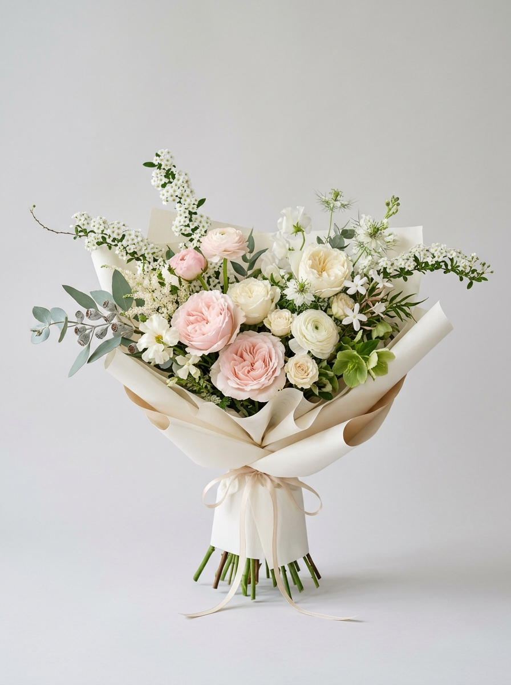
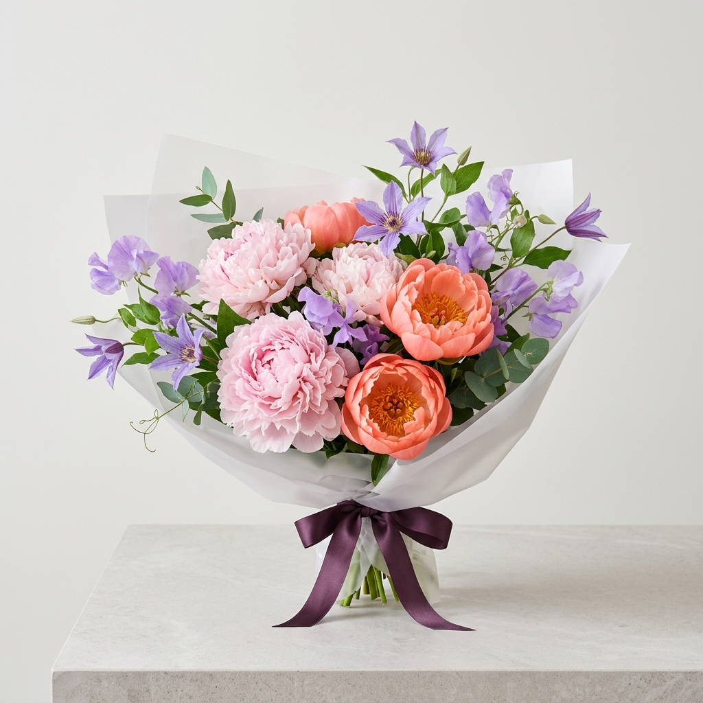
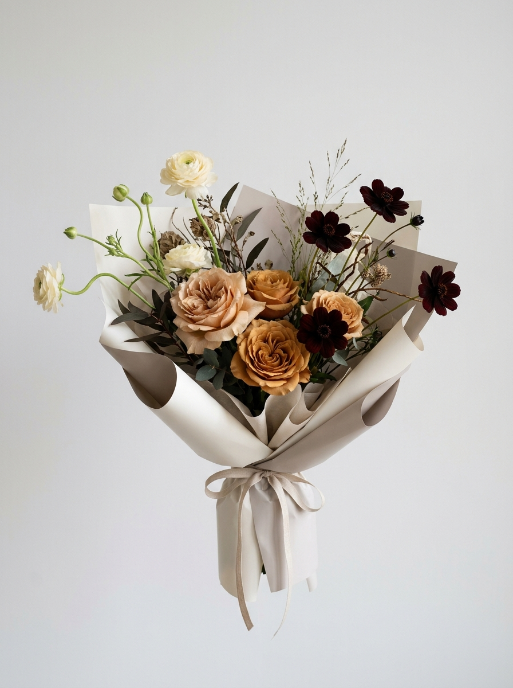
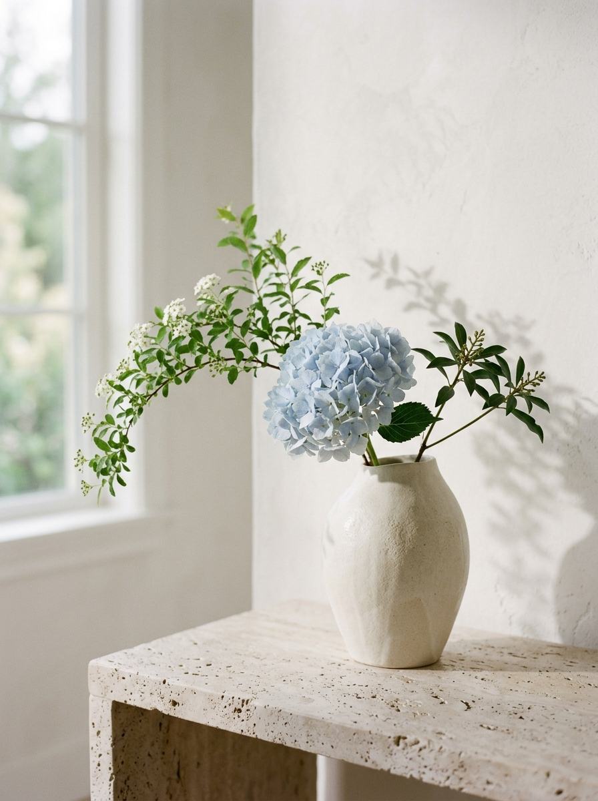

1/4
01 逛花 · 推荐
默认首屏
春季轻雾光晕 · 三行紧凑顶栏 · 错落双列轻边瀑布流
关注
推荐
同城
搜荔枝玫瑰、法式手捧、同城花店…

落日珊瑚芍药上线第一周，混搭紫调香豌豆

卡布奇诺玫瑰与洋牡丹，给偏爱低饱和的你
 1/3
1/3
拆开朋友寄来的春日郁金香，客厅瞬间亮起来

一枝马醉木配浅蓝绣球，阴天客厅的安静角落

刚收到的洋牡丹别急着满水插，斜剪醒花能多开一周
02 逛花 · 同城
本地发现
轻量定位条「上海 · 静安 ▾」· 卡面微露距离与同城花店实拍
关注
推荐
同城
搜静安附近花店、当日实拍花束…
 1/3
1/3
白绿马蹄莲配蝴蝶兰，静安寺下午刚包好的定制束
花店
静安寺 · 850m
2小时前
本周荔枝玫瑰花头很紧实，同城闪送可提前返图
南京西路 · 1.4km
今天
路过巨鹿路顺手抱了一小束洋甘菊，配冰美式刚好
巨鹿路 · 1.2km
3小时前
安福路小院今日份低饱和卡布奇诺手捧实拍
徐汇 · 1.8km
昨天
03 逛花 · 关注
有动态态
常看花店头像栏 + 动态流（顶部工具栏可切「冷启动推荐态」）
关注
推荐
同城
搜已关注花店或花友动态…
常看花店与花友
全部 6 位 ›
刚修好一批卡布奇诺玫瑰，明午还有 2 个手捧档期
干净的白绿色系返图，给不爱甜腻粉调的女生
花店
今日花市挑到的莎拉芍药，自带淡淡果香
春日木本花枝剪十字更吸水，两分钟养护笔记
还没有关注喜欢的花店
关注几家审美合拍的本地花店，随时看当日新到花材与真实返图
为你挑的本地精品花店
换一批
屿花舍
花店
雾岛植物
花店
04 详情 · 花店实拍
商家作品衔接
高清实拍画廊 · 花店名片与透明参考价 · 进店看看 / 问这家同款
今日新到荔枝玫瑰配雪柳，雾面奶白纸真显高级
今天花市挑到状态很好的一批荔枝玫瑰，花头紧实自带浅浅荔枝甜香。搭了刚冒新芽的喷泉雪柳与尤加利叶，用双层雾面奶白纸收出自然蓬松感，送朋友或纪念日都耐看。
屿花舍 · 静安店
今日可约
距你 850m · 实拍作品 68 套 · 常做自然风
参考 ¥268–328（以当日花材为准）
进店看看 ›
评论 18
满
雪柳垂下来的线条太好看了，请问明天下午还能约同款吗？
32分钟前 · 上海
5
05 详情 · 顾客晒花
社区转化衔接
真实晒花笔记 · 关联花店来源卡 + 柔和「带图问附近花店」入口
拆开朋友寄来的春日郁金香，客厅瞬间亮起来
周末一早收到这束奶黄配淡粉的法式郁金香，包装纸是淡淡的米白揉纸，没有多余塑料感！随手放在餐桌边晒着太阳喝冰美式，心情好到飞起，准备过两天自己也去约一束。
屿花舍 · 静安店
花店
花友标注来源花店 · 上海 静安 850m
未标注店家或收花地不在附近？可发图问当地花店能否按预算做相近感觉
评论 24
禾
奶黄配淡粉太温柔了！郁金香过两天还会自己弯出自然弧度，插瓶更好看
5小时前 · 杭州
12